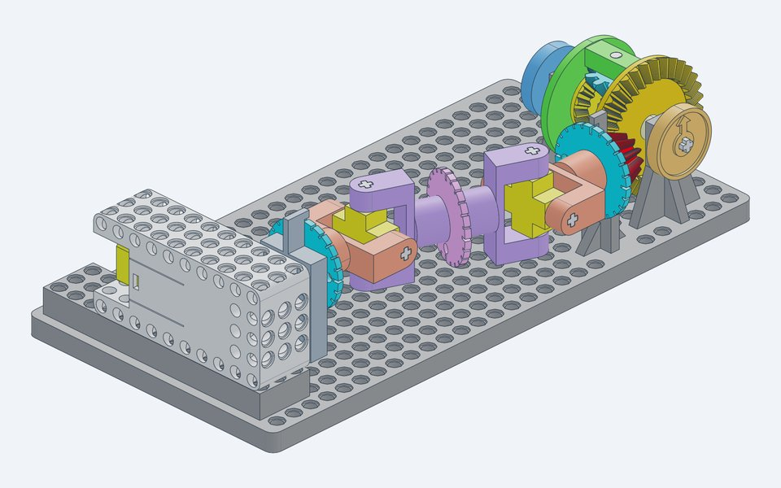

萬向接頭
萬向接頭讓兩根夾一個角度的軸可以一起轉。構造只有兩個叉子和一個十字軸，但單個接頭的輸出轉速會忽快忽慢；本頁推導這個不等速關係，說明怎麼用兩個接頭互相抵消，並介紹汽車半軸用的等速接頭。
1. 構造
- 輸入叉、輸出叉（Yoke）：分別固定在兩根軸上，叉口各夾住十字軸的一對軸頸
- 十字軸（Cross / Spider）：四個軸頸互相垂直，通常套滾針軸承（Needle Bearing）
- 兩軸中心線交在十字軸中心，夾角 β 可以在轉動中改變（例如懸吊上下跳）
- 又稱虎克接頭（Hooke's Joint）或卡登接頭（Cardan Joint），十六、十七世紀就有記載
- 它只能處理角度偏差；兩軸平行錯開時要用兩個接頭（Z 型），或改用十字滑塊聯軸器
2. 為什麼不等速
- 輸入叉的軸頸一定在垂直輸入軸的平面上繞圈，輸出叉的軸頸一定在垂直輸出軸的平面上繞圈；兩個平面夾 β 角
- 十字軸兩對軸頸永遠互相垂直，把一個平面上的等角轉動「投影」到另一個傾斜的平面，角度就被拉伸或壓縮了
- θ₁ 從「輸入叉軸頸落在兩軸所在平面」的位置量起，可推得：
tan θ₂ = tan θ₁ / cos β
ω₂ / ω₁ = cos β / (1 − sin²β · cos²θ₁)
最大 ω₂/ω₁ = 1 / cos β （θ₁ = 0°、180°）
最小 ω₂/ω₁ = cos β （θ₁ = 90°、270°）
最大角度差 θ₂ − θ₁ = atan[ (1 − cos β) / (2 √cos β) ]
- 兩軸平均轉速相同（轉一圈還是一圈），但輸出軸每轉加速兩次、減速兩次
- 波動和 β 不是線性關係：小角度幾乎看不出來，超過 20° 以後快速變大
| 夾角 β | 最大 ω₂/ω₁ | 最小 ω₂/ω₁ | 轉速波動（最大 − 最小） | 最大角度差 |
|---|---|---|---|---|
| 5° | 1.004 | 0.996 | 0.8 % | 0.11° |
| 10° | 1.015 | 0.985 | 3.1 % | 0.44° |
| 20° | 1.064 | 0.940 | 12.4 % | 1.78° |
| 30° | 1.155 | 0.866 | 28.9 % | 4.12° |
| 45° | 1.414 | 0.707 | 70.7 % | 9.88° |
推導要點
- 輸入軸沿 x，輸出軸方向 a₂ = (cos β, sin β, 0)。輸入叉軸頸方向 u₁ = (0, cos θ₁, sin θ₁)
- 輸出叉軸頸 v₂ 要同時垂直 u₁（十字軸）和 a₂（輸出軸），所以 v₂ ∥ a₂ × u₁ = (sin β sin θ₁, −cos β sin θ₁, cos β cos θ₁)
- 把 v₂ 寫在輸出軸自己的座標裡，得到輸出叉轉角滿足 tan θ₂ = tan θ₁ / cos β；對時間微分就是上面的速度比
3. 互動模擬
輸入角 θ₁
輸出角
角度差
速度比 ω₂/ω₁
最大／最小
轉速波動
軸端的短指針標出各軸目前轉到哪裡。雙萬向模式是 Z 型：輸出軸和輸入軸平行、錯開一段距離，兩個接頭夾角都是 β。
4. 雙萬向接頭：讓不等速互相抵消
- 兩個接頭的夾角相等（β₁ = β₂）
- 中間軸兩端的叉子在同一平面（同相，In Phase）：第一個接頭造成的加速，剛好被第二個接頭的減速抵消
- 三根軸在同一平面上（Z 型或 W 型）
只要其中一條不成立，就不是等速。最常見的錯誤是中間軸叉子裝錯 90°：波動不但沒抵消，反而加倍（在模擬裡切到「叉子錯 90°」就看得到）。所以傳動軸的滑動花鍵通常有對位記號，拆裝時要對齊。
5. 等速萬向接頭（CV Joint）
- 等速原理：兩軸靠接觸點互推，接觸點的線速度對兩軸一樣；若接觸點到兩軸的距離也一樣，角速度就一樣。所以只要讓所有傳力點都落在夾角平分面上
- 球籠式（Rzeppa / Ball-Type）：內外圈各有 6 條溝，鋼珠由保持架（Cage）帶著，始終留在平分面上；角度可到約 45° 以上，用在前驅車半軸的車輪端
- 三叉式（Tripod）：三叉軸上的滾子在殼體溝槽裡滑動，可以軸向伸縮但角度較小，用在半軸的變速箱端
- 雙萬向（Double Cardan）：把兩個十字軸接頭做在一起、中間用定心機構維持兩邊角度相等，四輪傳動車的前傳動軸常用
- CV 接頭裡面有潤滑脂、外面包橡膠防塵套；防塵套破了進沙，接頭很快會磨壞（轉彎時「喀喀」響）
6. 應用與注意事項
- 後輪驅動車傳動軸：Z 型雙萬向＋滑動花鍵，同時處理角度和懸吊上下跳造成的長度變化
- 方向盤轉向柱：轉向柱和轉向機不在一直線，常用一到兩個萬向接頭繞過引擎室的東西
- 工具：套筒扳手的萬向頭、電鑽的彎角延長桿
- 單個萬向接頭的工作夾角一般不超過約 30°：角度越大，轉速波動、軸承負荷和磨耗都越大
- 夾角 0° 也不理想：滾針軸承完全不擺動，會一直壓在同一位置而壓出凹痕；工業傳動軸通常保留一點點角度
7. 實例：TT 馬達驅動模組為什麼沒用萬向接頭
- TT 馬達軸和差速器輸入軸平行錯開 12 mm，平行偏移只能用兩個萬向接頭排成 Z 型
- 若每個接頭夾角取 30°，中間軸至少要 12 ÷ sin 30° = 24 mm，再加上兩端叉子，總長約 40 mm
- 但馬達前端到小齒輪軸承塔只有 21 mm；夾角加大能縮短長度，卻讓轉速波動更大
- 最後改用總長 21.7 mm 的十字滑塊聯軸器：專門處理平行偏移，而且轉速完全 1:1
8. 教學模組：TT 馬達＋雙萬向接頭＋差速器

- 差速器模型的小齒輪軸在中線右邊 23.5 mm，TT 馬達在中線上：兩軸平行錯開，用兩個萬向接頭排成 Z 型
- 三根軸上各有一個指針盤：同相時馬達端和輸出端的盤一直對同一個刻度，中間軸的盤會超前、落後
- 中間軸一端的叉子轉 90° 再裝 → 波動加倍；馬達可換 4 個位置，夾角 22.8°～40.3°
- 也可以拔掉馬達、裝上手搖曲柄慢慢轉
- 作品頁與列印檔 → 3D 動畫：組裝與運轉 ↗